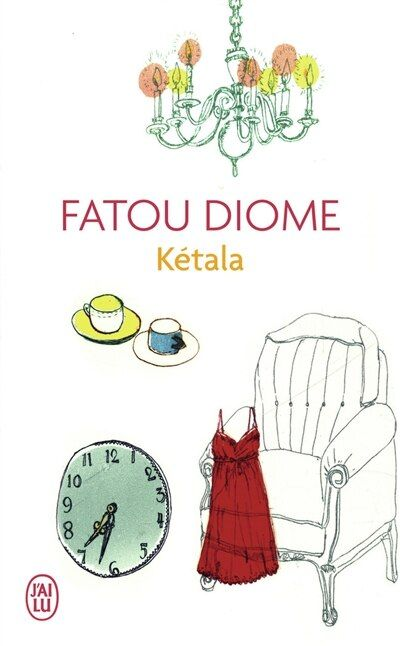

Les œuvres qui font vibrer la littérature sénégalaise
La littérature sénégalaise est une voix qui traverse les océans et les générations. Elle raconte l’exil, la mémoire, les traditions, les luttes et les espoirs. Chaque œuvre représente une partie de notre patrimoine culturel et donne vie aux histoires longtemps restées dans le silence.

KétalaLes objets d’une défunte racontent sa vie.
 Celles qui attendent
Celles qui attendent
Portrait de femmes confrontées à l’absence.
 Aucune nuit ne sera noire
Aucune nuit ne sera noire
Récit d’espoir et de résilience.
 Les Veilleurs de Sangomar
Les Veilleurs de Sangomar
Une histoire inspirée des légendes sénégalaises.
 Une si longue lettre
Une si longue lettre
Roman épistolaire sur la condition féminine.
 Un chant écarlate
Un chant écarlate
Une histoire d’amour confrontée aux préjugés.
 Les Bouts de bois de Dieu
Les Bouts de bois de Dieu
Fresque sur la grève des cheminots africains.
 Terre Ceinte
Terre Ceinte
Résistance, pouvoir et survie.
 La plus secrète mémoire des hommes
La plus secrète mémoire des hommes
Mémoire, écriture et quête de vérité.
Les objets d’une défunte racontent sa vie.
Celles qui attendent
Portrait de femmes confrontées à l’absence.
Une si longue lettre
Roman épistolaire sur la condition féminine.
Les Bouts de bois de Dieu
Fresque sur la grève des cheminots.